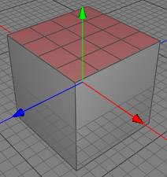

細分化 リニア ツール
細分化 リニアツールは、ローポリゴンオブジェクトに対して線形分割を１回実行します。これはオブジェクトメッシュの細かさをあげるために使う事ができます。この分割ツールは、すべてのハードエッジとポリゴン選択範囲（マテリアル）プロパティを保持します。
ポリゴン選択範囲の詳細については、 ローポリゴンオブジェクトを参照して下さい。

細分化 リニア を２回実行する前後
編集モード
細分化 リニア ツールは、ローポリゴンオブジェクトにのみ使用する事ができます。ポイントモード、エッジモード、ポリゴンモードに関わらず、結果は同じです。


線形分割を実行するには、まずオブジェクトブラウザからローポリゴンオブジェクトを選択し、メニューコマンド "ツール ポリゴン細分化 リニア " を選択します。これで線形分割がメッシュに対して実行されます。ハードエッジや複数マテリアルの設定は保持されます。
ポリゴン細分化 リニア " を選択します。これで線形分割がメッシュに対して実行されます。ハードエッジや複数マテリアルの設定は保持されます。
ポリゴンモードでいくつかのポリゴンを選択していた場合には、分割はその選択ポリゴンにのみ実行されます。
補助キー
-
- なし
プロパティ
- なし
ヒント
- サブディビジョンモデリングをインタラクティブに行うには、サブディビジョンを使用します。